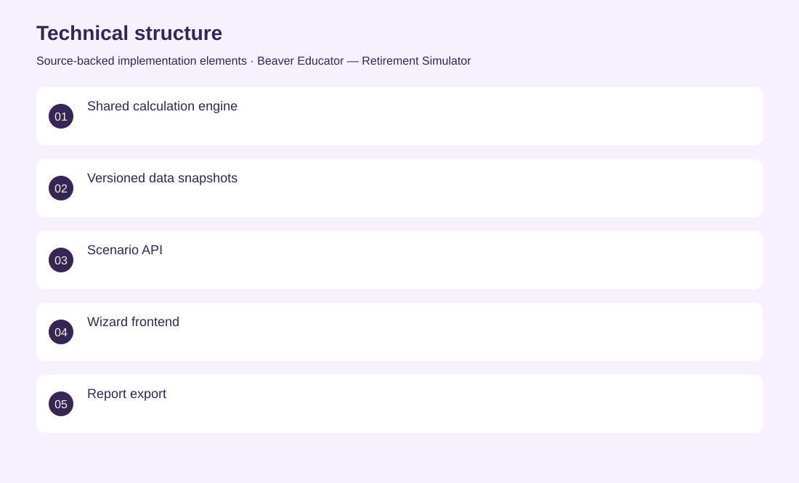
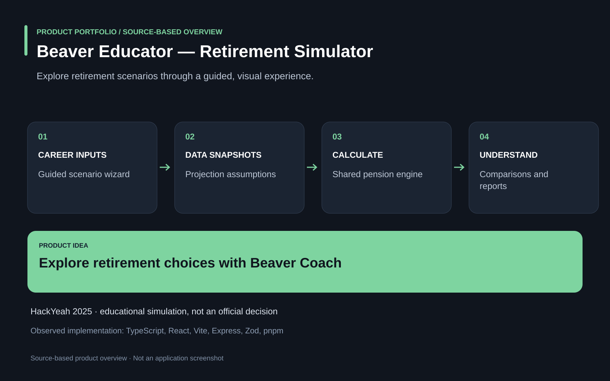

The project
Retirement projections are difficult to understand when contribution choices and long-term assumptions remain hidden. A guided simulator connects career and contribution scenarios with a shared calculation engine, data snapshots, comparisons and downloadable reports. Co-developed the TypeScript monorepo, calculation and API workflows, and an educational frontend with the Beaver Coach character. HackYeah 2025 prototype for the ZUS challenge. It is an educational simulator, not an official benefit decision system.
The problem
Retirement projections are difficult to understand when contribution choices and long-term assumptions remain hidden.
The solution
A guided simulator connects career and contribution scenarios with a shared calculation engine, data snapshots, comparisons and downloadable reports.
My contribution
Co-developed the TypeScript monorepo, calculation and API workflows, and an educational frontend with the Beaver Coach character.
Technical structure

Product overview

The portfolio cover is an editorial illustration. No live product screenshot is presented for this project.
Showcase assets
{kind=link}
{kind=link}
{kind=link}
Existing product identity. Newly designed marks are portfolio treatments, not claims of official client branding.